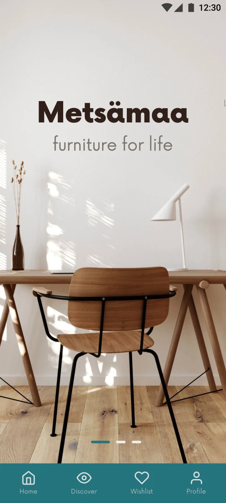
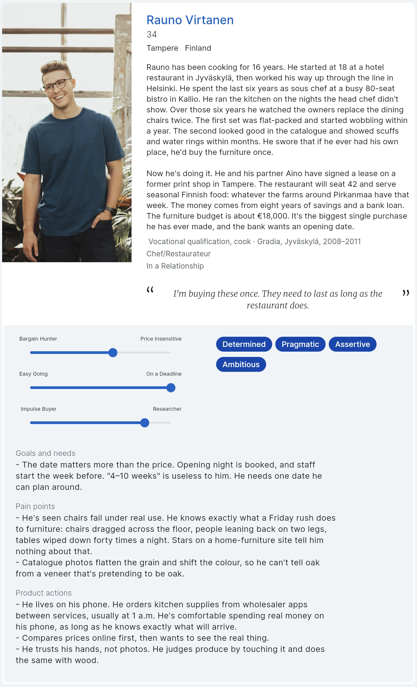
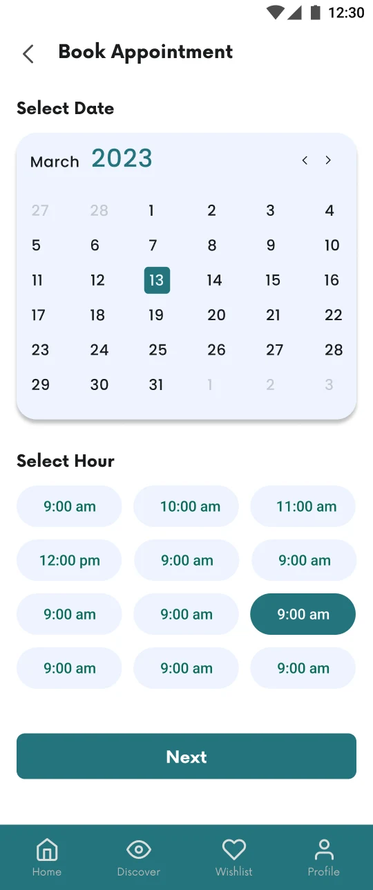
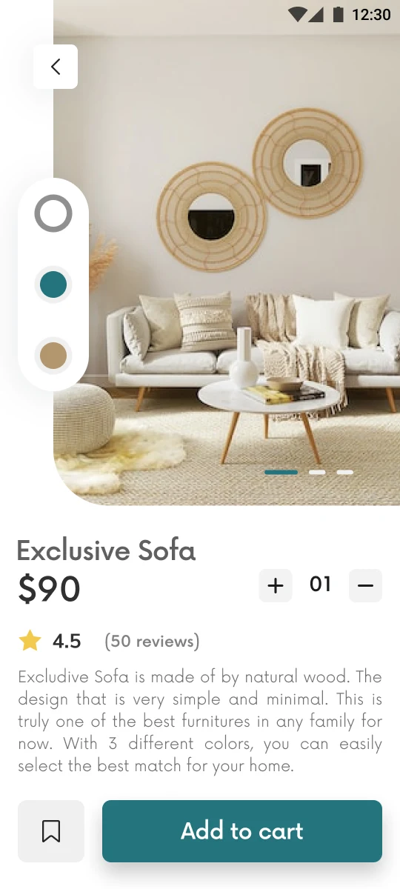
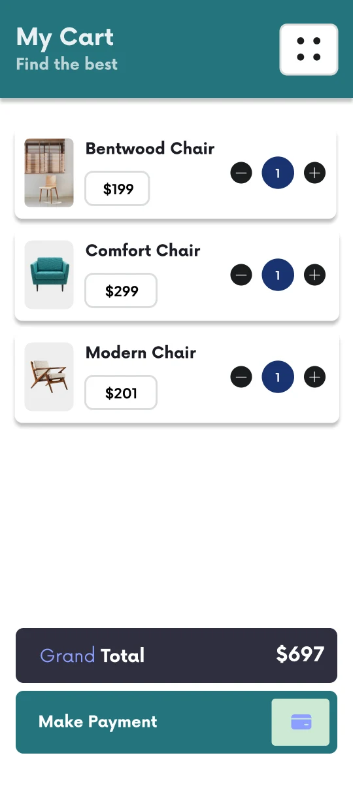
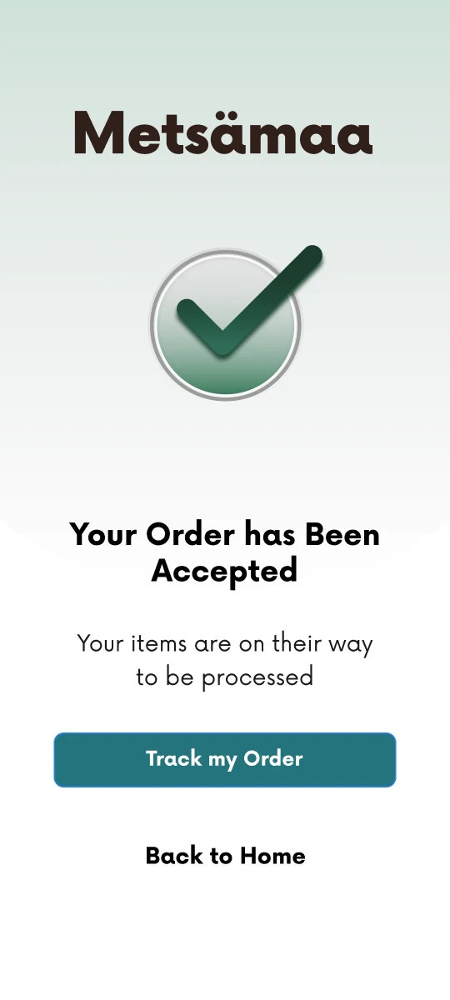

One project, start to finish
Metsämaa is a sample project we ran through the Concierge Service. Everything on this page is what a client gets, in the order we make it.
The brief
Metsämaa makes solid-wood furniture in Finland. Its line: furniture for life. It wants to sell high-end dining sets to restaurant owners through an app.
The question we were asked: will restaurant owners buy furniture this expensive on their phone, and what would they need to trust it?
- Client
- Metsämaa (sample)
- Makes
- Solid-wood furniture
- Selling to
- Restaurant owners
- Through
- A mobile app

What we assumed going in
We write down what we think is true before we talk to anyone. Research with nothing to test turns into a pile of opinions. With a hypothesis, every interview either backs an assumption up or knocks it down, and the ones that fall are often where the best ideas come from.
Restaurant owners furnishing a new room will order custom, high-end dining sets online if they can see the work up close and talk to a person before they pay.
Three assumptions to test:
- Price isn't the main barrier. Confidence is.
- Buyers want to set size, wood and colour themselves.
- A workshop visit or a call is what closes the sale.
Who we're designing for
Rauno, 34, Finland. Opening his first restaurant.
A persona is one person standing in for everyone we interviewed. We talk to real buyers first, then sort what they told us: the goals that came up again and again, the things that stopped them buying, and the habits behind both. Rauno is that pattern with a name, a budget and an opening date.
He's there so every later decision has someone to answer to. "Would Rauno trust this screen?" is a question the team can settle. "Would users like it?" isn't. The journey map, the recommendations and the screens below are all built around him.

His path from search to sitting down
Seven moments, from Rauno's first search to a full dining room. The curve tracks how he feels at each one.
A journey map follows one person through every step of buying, not just the part that happens in the app. Most products are designed screen by screen, which hides where people give up. Laying the whole path out in a line shows the moment that matters most, and here it happened outside the app entirely.
What it showed
Confidence dips while he compares manufacturers, and peaks after he sees the furniture in person. The visit is the turning point, so the app has to get him there.
Who else he's looking at
Four companies Rauno would compare Metsämaa against, side by side on range, price, channels, customer experience and sustainability.
What it showed
All four sell to homes. None speaks to someone furnishing a whole restaurant, and only Crate & Barrel offers design consultations. That gap is Metsämaa's opening.
What we recommended
Every recommendation here traces back to something the research turned up. Some confirmed what we assumed going in: buyers do want to choose size, wood and colour themselves. The journey map showed the sale is won at the workshop, not in the app, so the app's job is to get Rauno there. The competitor analysis showed that none of the big names sells to restaurants, which is why long life, not price, runs through every screen.
Lead with custom.
Size, wood and colour chosen up front, in one form.From the interviews: confirmed assumption 2
See the custom formPut a person in the loop.
Book a workshop tour or a call before paying.From the journey map
See the booking screenShow the real material.
Large photos, every colourway, reviews from other buyers.From the persona: photos flatten the grain
See the product screenMake the order feel certain.
One clear total, then a confirmed order you can track.From the persona: “4–10 weeks” is useless to him
See the cartSell the long life, not the price.
That's the ground IKEA and Wayfair can't take.From the competitor analysis
Runs through every screen
The screens
Each screen carries out one recommendation above. We build them in Screen Builder, our own tool for the first version of a screen, when the question is whether it works at all. What you get is iteration one: mid-fidelity screens, as finished as the photos and content we have allow. You see them in days, and changes are cheap until the flow is right.
Home
Browse by type
Custom furniture form
Recommendation 1

Book an appointment
Recommendation 2

Product detail
Recommendation 3

Cart
Recommendation 4

Order accepted
Recommendation 4
Two to three weeks
Week 1
Intake, the brief, hypothesis, competitor analysis
Week 2
Interviews, persona, journey map
Week 3
Recommendations, six screens from Screen Builder
Your part: the intake conversation, one kickoff call, answers when we have questions, a review at the end.
Starting at $2,800
Research report, persona, journey map, competitor analysis, and six screen mocks from Screen Builder.
Metsämaa is a sample project made to show the process.